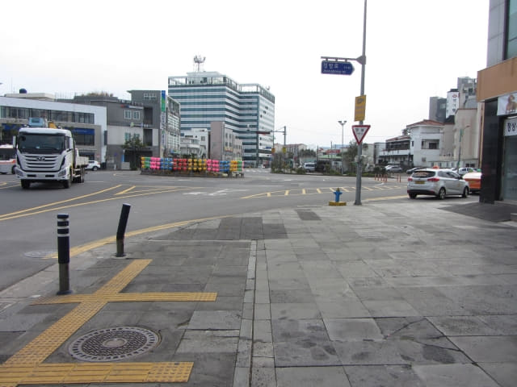
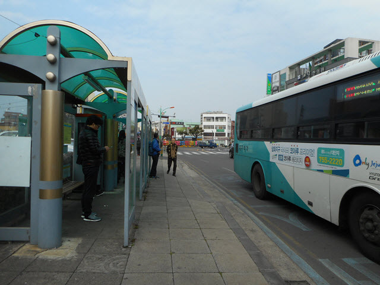

用完豐富自助早餐早餐, 返回房間收拾行李, 於早上九時離開只住宿了一晚的 M-STAY Hotel Jeju, 準備步行往離酒店不太遠的「동문로터리」巴士站, 乘 701 號巴士往表善 (표선 Pyoseon)。濟州島的道路很簡單, 所以巴士路線也相對簡單, 如果不多心, 其實只要專心搭幾條路線, 已經可以去大部份的景點。
質素很好的 M-STAY Hotel Jeju, 令人有點依依不捨的。
離開酒店, 轉右沿 Jungang Road (중정로)走, 昨天已走過三次, 所以對這段路十分熟悉。

不一會便來到昨晚在這裡吃豐富刺身晚餐的西歸浦每日偶來市場 (서귀포매일올레시장 Seogwipo Daily Olle Market)。
我們昨天在這裡轉右往李仲燮路, 現在繼續向前走。
經過西歸浦每日市場另一個出入口。
繼續往前走。
迎面是一個很大的迴旋處。按地圖所示, 往表善的 701 號「동문로터리」巴士站就在迴旋處另一邊的十二點方位。

經過一個計程車站。
走到迴旋處對面, 「동문로터리」巴士站就在路口不遠處。

十分順利, 等了約十分鐘, 一輛 701 號巴士駛來靠站。登上了車廂, 只有幾位乘客, 十分舒適。
巴士車廂內會顯示到站和下一個站的巴士站名稱, 所以不用擔心不懂下車。
表善 (표선 Pyoseon)
巴士於早上十時十時八分抵達表善的表善里辦公室 (표선리사무소)巴士站。下了車, 望望天空, 天氣頗為明朗, 起碼沒有下雨, 提早來表善是正確的決定呀! 可惜只是非常短暫, 稍後又開始下大雨!

表善下榻 雷森觀光酒店 (제주리시온호텔 Rezion Tourist Hotel)
我們在表善下榻 雷森觀光酒店, 宿一晚。酒店離巴士站不遠, 沿大街繼續向前走便是。

表善高樓不多, 看到前面一座好像鶴立雞群的大廈便已經知道是雷森觀光酒店了。
酒店一樓大堂設計簡樸, 最特別是樓底很高, 利用玻璃幕牆透光, 有些像美術館的感覺。

表善雷森觀光酒店 (제주리시온호텔 Rezion Tourist Hotel) 名片

因只是早上十時二十分, 還未到入住時間, 將行李寄放在酒店一樓服務處後, 便開始今日表善的行程。